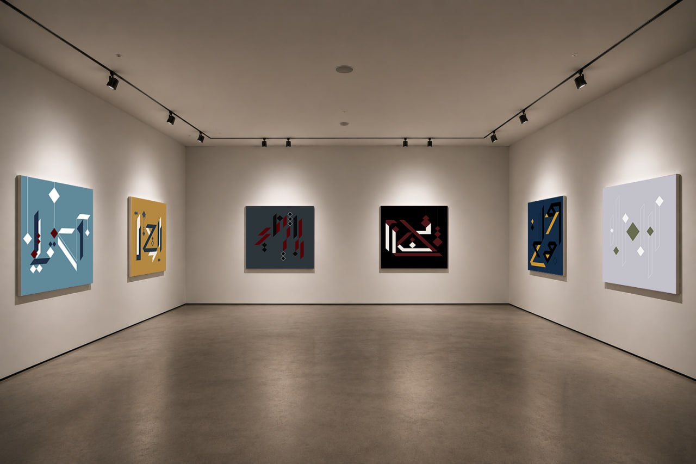

Country A
A Canvas That Listens and Responds
Sounding Canvas redefines what a painting can be. Rooted in Persian calligraphy and western music, each piece becomes both visual and sonic, inviting touch, resonance, and discovery. What may appear as a static composition is, in truth, a living interface. When touched, it sings.
The painted surface responds with evolving sounds, transforming the viewer from observer into active participant. This project challenges the traditional divide between viewer and artwork.
Here, the audience becomes a co-creator, and each interaction gives rise to a unique sensory dialogue.

A first encounter
The painting is no longer silent.
Sounding Canvas embodies the spirit of a social sculpture: a living system shaped by human presence, dialogue, and shared gesture. Each touch activates not only sound, but a form of communication that transcends words, a way to say “I’m here” through vibration, rhythm, and silence.
Through real-time sound processes, adaptive technologies, and tactile perception, Sounding Canvas transforms the act of seeing into an act of listening and feeling. The painting becomes a responsive presence that evolves through interaction.
Approach the painting.
You enter the room and find six Sounding Canvases distributed across
its three walls.
Your attention is drawn to the painting at the far
right: Silent Score.
You approach it. You know that the surface can be touched, but at first you hesitate. Then, gently, you place your hand on the large green square at the centre of the painting.